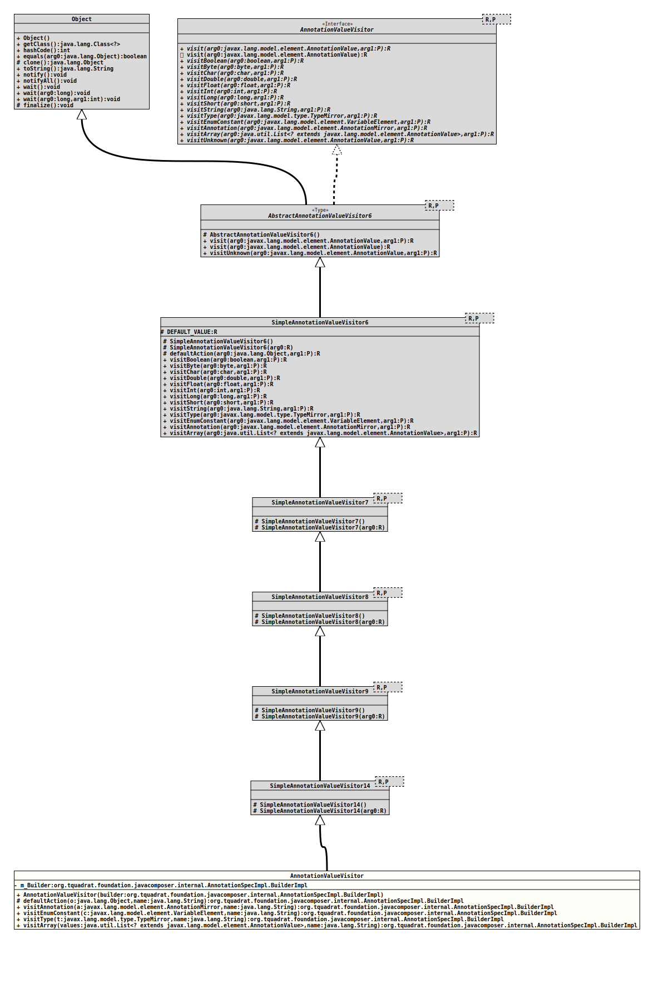

Class AnnotationValueVisitor
java.lang.Object
javax.lang.model.util.AbstractAnnotationValueVisitor6<R,P>
javax.lang.model.util.SimpleAnnotationValueVisitor6<R,P>
javax.lang.model.util.SimpleAnnotationValueVisitor7<R,P>
javax.lang.model.util.SimpleAnnotationValueVisitor8<R,P>
javax.lang.model.util.SimpleAnnotationValueVisitor9<R,P>
javax.lang.model.util.SimpleAnnotationValueVisitor14<AnnotationSpecImpl.BuilderImpl,String>
org.tquadrat.foundation.javacomposer.internal.AnnotationValueVisitor
- All Implemented Interfaces:
AnnotationValueVisitor<AnnotationSpecImpl.BuilderImpl,String>
@ClassVersion(sourceVersion="$Id: AnnotationValueVisitor.java 1062 2023-09-25 23:11:41Z tquadrat $")
@API(status=INTERNAL,
since="0.0.5")
public class AnnotationValueVisitor
extends SimpleAnnotationValueVisitor14<AnnotationSpecImpl.BuilderImpl,String>
Annotation value visitor adding members to the given builder instance.
- Author:
- Square, Inc.
- Modified by:
- Thomas Thrien (thomas.thrien@tquadrat.org)
- Version:
- $Id: AnnotationValueVisitor.java 1062 2023-09-25 23:11:41Z tquadrat $
- Since:
- 0.0.5
- UML Diagram
-

UML Diagram for "org.tquadrat.foundation.javacomposer.internal.AnnotationValueVisitor"
{kind=link}
-
Field Summary
FieldsFields inherited from class javax.lang.model.util.SimpleAnnotationValueVisitor6
DEFAULT_VALUE -
Constructor Summary
ConstructorsConstructorDescriptionCreates a newVisitorinstance. -
Method Summary
Modifier and TypeMethodDescriptionprotected final AnnotationSpecImpl.BuilderImpldefaultAction(Object o, String name) visitAnnotation(AnnotationMirror a, String name) visitArray(List<? extends AnnotationValue> values, String name) visitEnumConstant(VariableElement c, String name) visitType(TypeMirror t, String name) Methods inherited from class javax.lang.model.util.SimpleAnnotationValueVisitor6
visitBoolean, visitByte, visitChar, visitDouble, visitFloat, visitInt, visitLong, visitShort, visitStringMethods inherited from class javax.lang.model.util.AbstractAnnotationValueVisitor6
visit, visit, visitUnknown
-
Field Details
-
m_Builder
The builder.
-
-
Constructor Details
-
AnnotationValueVisitor
Creates a newVisitorinstance.- Parameters:
builder- The builder that takes the new members.
-
-
Method Details
-
defaultAction
- Overrides:
defaultActionin classSimpleAnnotationValueVisitor6<AnnotationSpecImpl.BuilderImpl,String>
-
visitAnnotation
- Specified by:
visitAnnotationin interfaceAnnotationValueVisitor<AnnotationSpecImpl.BuilderImpl,String> - Overrides:
visitAnnotationin classSimpleAnnotationValueVisitor6<AnnotationSpecImpl.BuilderImpl,String>
-
visitEnumConstant
- Specified by:
visitEnumConstantin interfaceAnnotationValueVisitor<AnnotationSpecImpl.BuilderImpl,String> - Overrides:
visitEnumConstantin classSimpleAnnotationValueVisitor6<AnnotationSpecImpl.BuilderImpl,String>
-
visitType
- Specified by:
visitTypein interfaceAnnotationValueVisitor<AnnotationSpecImpl.BuilderImpl,String> - Overrides:
visitTypein classSimpleAnnotationValueVisitor6<AnnotationSpecImpl.BuilderImpl,String>
-
visitArray
public final AnnotationSpecImpl.BuilderImpl visitArray(List<? extends AnnotationValue> values, String name) - Specified by:
visitArrayin interfaceAnnotationValueVisitor<AnnotationSpecImpl.BuilderImpl,String> - Overrides:
visitArrayin classSimpleAnnotationValueVisitor6<AnnotationSpecImpl.BuilderImpl,String>
-